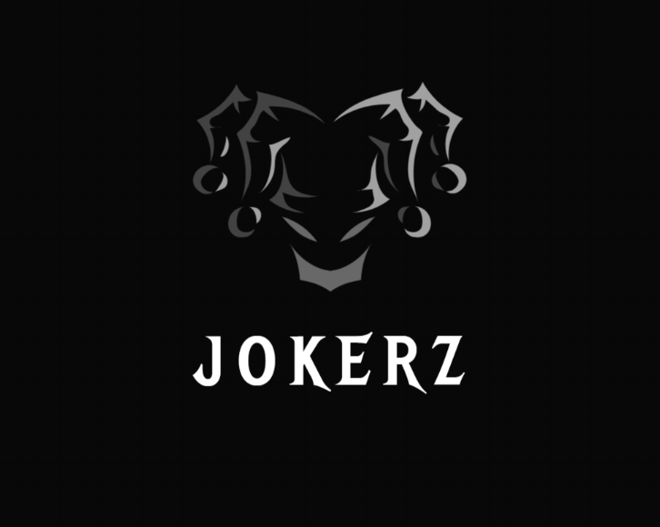

Jokerz Inoff Bewerbung
Unsere Geschichte
Die Familie Jokerz, angeführt von Joker Jokerz, hat eine
faszinierende und zugleich düstere Vorgeschichte, die tief
in die Unterwelt der Kriminalität und des organisierten
Verbrechens eintaucht. Joker Jokerz, geboren als Raymond
Kingsley, wuchs in den rauen Straßen von Los Santos auf.
Schon in jungen Jahren wurde er mit der brutalen Realität
des Lebens konfrontiert. Sein Vater war ein kleiner Gauner,
der sich mit Diebstählen und kleinen Betrügereien über
Wasser hielt. Seine Mutter, eine kränkliche Frau, starb früh
an einer Überdosis. Diese traumatische Kindheit prägte
Raymond und ließ ihn frühzeitig erwachsen werden. Mit 16
Jahren hatte Raymond bereits eine kleine Bande von
Jugendlichen um sich geschart, die gemeinsam kleinere
Raubüberfälle und Einbrüche verübten. Sein Spitzname "Joker"
entstand in dieser Zeit, weil er immer ein breites,
unerschütterliches Lächeln auf seinem Gesicht trug, selbst
in den gefährlichsten Situationen. Sein Charisma und seine
Fähigkeit, Menschen zu manipulieren, machten ihn schnell zu
einem gefürchteten und respektierten Anführer in der
Unterwelt. In seinen frühen Zwanzigern beschloss Joker,
seine kriminellen Aktivitäten zu professionalisieren. Er
gründete die Familie Jokerz, eine kriminelle Organisation,
die sich auf Waffenhandel und Familien Unternehmen
spezialisierte. Unter seiner Führung wuchs die Familie
Jokerz schnell zu einer der mächtigsten und
einflussreichsten Verbrecherorganisationen in Los Santos
heran. Die Familie Jokerz operierte jahrzehntelang
erfolgreich und expandierte ihre Aktivitäten sogar in andere
Städte und Länder. Doch mit der Zeit geriet Joker Jokerz
zunehmend ins Visier der Strafverfolgungsbehörden. Trotz
zahlreicher Versuche, ihn zu fassen, gelang es den Behörden
nie, genügend Beweise zu sammeln, um ihn hinter Gitter zu
bringen. Heute bleibt die Familie Jokerz ein Symbol für
Macht, und Gefahr in der kriminellen Unterwelt. Und Joker
Jokerz, der Mann mit dem unerschütterlichen Lächeln, bleibt
eine Legende – sowohl gefürchtet als auch bewundert.
Unsere Ziele
● Spass haben
● Terrorstatus
● Terrorstatus
● Grosse und einflussreiche Famiie werden
Geschäftsmodell
● Hafenschlachten
● Schutzgelderpressung
● Familien Unternehmen
● Kampf um Rangfolge
● Waffenhandel
Farben und Kleidung
Unsere Familienkleidung ist:
Oberteil:58 Farbe: 1
Unterteil: 7 Farbe: 1
Schuhe: Schwarz
Ab Rang 7 ist keine Uniform erforderlich, solange sie vollständig schwarz ist.
Fuhrpark
Unsere Fahrzeuge Farbe ist Matt Schwarz mit
Weissem unterboden
Anwesen
Haus Nr. xxx
Lage
Haus Nr. xxx
Ränge
| Rang | Name | Beschreibung |
|---|---|---|
| 1 | Probemitglied | Neue Mitglieder, die sich in der Probezeit befinden |
| 2 | Mitglied | Vollwertige Mitglieder mit Zugang zu allen Veranstaltungen |
| 3 | Gangster | Gangster, die an organisierten Aktivitäten teilnehmen |
| 4 | Turfer | Mitglieder, die für die Verteidigung des Gebiets verantwortlich sind |
| 5 | Recruiter | Rekrutierer, die mit der Suche nach neuen Mitgliedern beauftragt sind |
| 6 | Mainteam | Hauptteam, das die wichtigsten Operationen durchführt |
| 7 | Eventleiter | Leiter, die für die Organisation von Veranstaltungen verantwortlich sind |
| 8 | Management | Management, das die Gesamtoperationen überwacht |
| 9 | Vize-OG | Stellvertreter, die den OG unterstützen |
| 10 | OG | Original Gangsters, die die Gruppe führen |
Impressum
Familien Name: Jokerz
Gründer: Joker Jokerz | 97020
Hausnummer: 31
Forum: Raymond Kingsley
Discord: miroshii
Warum wir Inoff brauchen
● Reichweite
● Inoff Events
● Kriminalität steigern